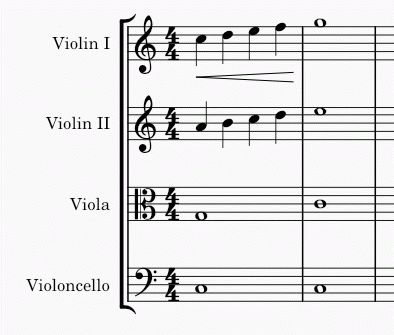

复制与粘贴
剪切、复制和粘贴命令可用于复制整段音乐、向前或向后移动音乐、在谱表之间复制文本或其他标记、交换不同小节中的内容等等。
使用这些命令
无论哪种情况，第一步都是 选择你要剪切或复制的内容。
与其他支持剪切、复制和粘贴的程序一样，你可以从 编辑 菜单、右键（或相关手势，如 Ctrl+单击 或双指轻点）后出现的右键菜单，或标准键盘快捷键访问这些命令。
| 命令 | 快捷键（Windows） | 快捷键（Mac） | 右键菜单 | 主菜单 |
|---|---|---|---|---|
| 剪切 | Ctrl+X | Cmd+X | 剪切 | 编辑 → 剪切 |
| 复制 | Ctrl+C | Cmd+C | 复制 | 编辑 → 复制 |
| 粘贴 | Ctrl+V | Cmd+V | 粘贴 | 编辑 → 粘贴 |
| 与剪贴板交换 | Ctrl+Shift+X | Cmd+Shift+X | 与剪贴板交换 | 编辑 → 与剪贴板交换 |
| 粘贴时值减半 | Ctrl+Shift+Q | Ctrl+Shift+Q（4.2 起） | 不适用 | 编辑 → 粘贴时值减半 |
| 粘贴时值翻倍 | Ctrl+Shift+W | Ctrl+Shift+W（4.2 起） | 不适用 | 编辑 → 粘贴时值翻倍 |
注意： 使用右键菜单时，务必始终右键单击在 已选中 的项目上；如果不小心右键单击了空白处，你的选择就会丢失！
复制范围选择
要复制一个范围——无论是单个和弦、单个小节、一条谱表上的多个小节，还是跨多条谱表的多个小节——请执行以下操作：
- 选择你要复制的范围
- 使用菜单中的 复制 命令或按 Ctrl+C（Mac：Cmd+C）
- 选择目标位置的第一个音符或休止符
- 使用菜单中的 粘贴 命令或按 Ctrl+V（Mac：Cmd+V）

复制的音乐会替换目标位置的现有内容。所选范围内的所有元素都会被复制，但全谱性元素除外，例如速度文本、调号和拍号变更以及反复记号。你可以使用 选择过滤器 从操作中 排除某一类型的其他元素。
复制单个元素或列表选择
MuseScore 也允许复制单个元素，或从一处到另一处复制多个歌词、和弦符号、力度记号、演奏记号或其他标记组成的 列表选择，同时保持目标位置的内容（如音符）不变。多个音符组成的 列表选择 无法复制。
在可能的情况下，MuseScore 会基于 字面音符时值距离 保持标记的相对时间位置，而不考虑小节节奏。这包括复制和弦符号和力度记号的情况。粘贴歌词和演奏记号时，目标音乐处需要有有效的音符或休止符锚点。
- 选择你要复制的元素
- 使用菜单中的 复制 命令或按 Ctrl+C（Mac：Cmd+C）
- 选择目标位置的第一个音符或休止符
- 使用菜单中的 粘贴 命令或按 Ctrl+V（Mac：Cmd+V）
移动元素
剪切和粘贴命令可用于
- 把一段乐段移到另一条谱表，例如把长笛上的音乐移到单簧管上，或
- 把一段乐段向前或向后移动。这种方法尤其适合插入或删除音符或休止符，并同时移动现有音符和休止符以制造或修剪静默。
小节（其节奏结构）无法移动，但请参阅 添加与删除小节 和 拍号 章节。移动 列表选择 时，其元素的相对位置会尽可能保持，见 “复制列表选择” 一节。
要移动选择：
- 选择 你要移动的内容
- 使用菜单中的 剪切 命令或按 Ctrl+X（Mac：Cmd+X）
- 选择目标位置的第一个音符或休止符
- 使用菜单中的 粘贴 命令或按 Ctrl+V（Mac：Cmd+V）
把选择与剪贴板交换
与剪贴板交换 命令把两个操作合二为一：(1) 首先，像 粘贴 命令一样，用剪贴板的内容覆盖乐谱中选中的部分；(2) 然后，像 复制 命令一样，把被覆盖的乐谱部分 传回 剪贴板。
例如，可以用它交换乐谱中长度相等的两段 A 和 B：
- 选择乐段 A
- 应用 剪切 命令
- 选择乐段 B
- 应用 与剪贴板交换 命令，把 A 粘贴到 B 的内容之上，同时把 B 的内容移到剪贴板
- 再次选择乐段 A（或只选择第一个音符、休止符或小节）
- 应用 粘贴 命令
与这里讨论的其他命令一样，你可以从菜单或通过键盘快捷键访问 与剪贴板交换 命令——此处为 Ctrl+Shift+X（Mac：Cmd+Shift+X）。
重复选择
复制粘贴的一个常见用途是在原文之后紧接着复制某一段（包括音符、和弦等）。使用特殊的 重复选择 命令可以简化此过程。
- 选择 要重复的单个元素或范围
- 按 R 键
这不能用于 列表选择。它可用于单个和弦（无论是其范围选择，还是恰好选中该和弦的一个音符时）。参见 选择元素 章节。在音符输入模式下，此命令会重复包含当前音符的整个和弦。这对于创建一系列重复和弦很有用。
把范围选择复制到多条谱表
如果你想把一段乐段复制到多条谱表——例如，用双簧管和单簧管重复长笛的音乐——可以使用 展开 命令：
- 选择你要复制的乐段
- 扩展选择以包含下方谱表（例如按 Shift+Down）
- 使用 工具→展开
这会复制原始选择，前提是它只包含单音——没有和弦、没有多个声部。如果有和弦或多个声部，它们会按 展开命令一节 所述分配到其余谱表中。
粘贴时值减半/翻倍
如果你输入了一段以八分音符为主的乐段，但想把整段减半为以十六分音符为主，或翻倍为四分音符，MuseScore 提供了一对特殊命令来实现。你既可以就地修改选择的时值，也可以创建一段时值修改后的独立副本。要把一段乐段的时值减半或翻倍：
复制单个元素
单个元素——即使是那些不会在 范围选择 中自动选中的元素，如拍号或反复跳房子记号——也可以选中后用鼠标复制。
- 按住 Ctrl+Shift（Mac：Cmd+Shift）的同时，单击并按住一个元素
- 把它拖到乐谱中的任意位置
- 松开鼠标按钮时，所选元素即被复制到新位置
